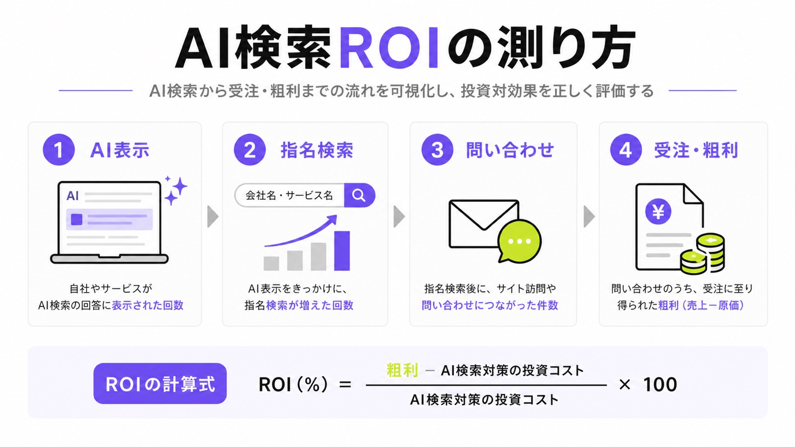
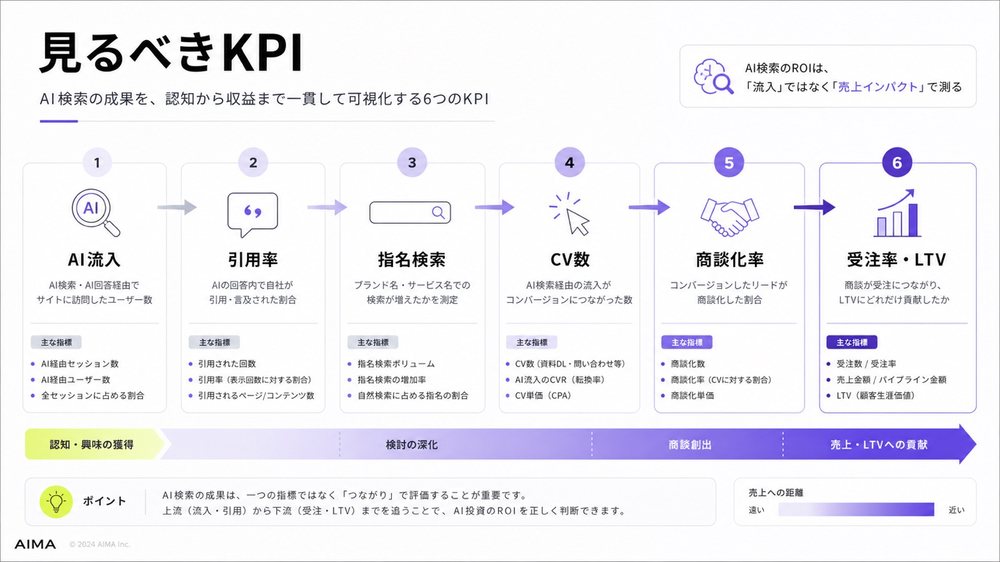
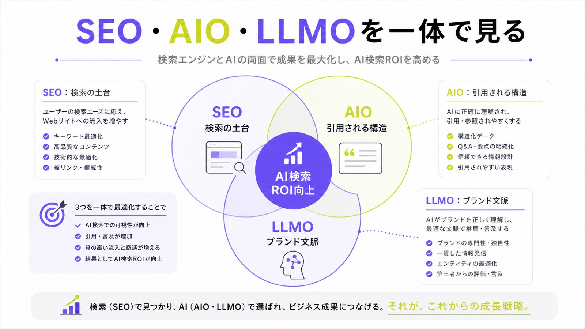

AI検索のROIとは？投資対効果を測る指標と改善方法を解説

ChatGPT、Gemini、Perplexity、Google AI Overviewsなどの普及により、ユーザーの情報収集は大きく変わりつつあります。従来は検索結果を見てWebサイトに訪問し、複数ページを比較してから問い合わせや購入に進む流れが一般的でした。しかしAI検索では、ユーザーがAIの回答内で要点を理解し、候補を絞り込んだうえで行動するケースが増えています。
そのため、AI検索対策の成果は「流入数が増えたか」だけでは判断できません。AI回答内で自社が引用されたか、候補として推薦されたか、指名検索や問い合わせに影響したかまで見なければ、正しい投資対効果は測れないからです。
この記事では、AI検索のROIの考え方、測定すべきKPI、投資対効果を高めるための具体策を解説します。
目次

AI検索のROIとは
AI検索のROIとは、ChatGPT、Gemini、Perplexity、Google AI OverviewsなどのAI検索経由で得られる成果に対して、どれだけの投資対効果があったかを示す考え方です。
従来のSEOでは、検索順位、自然検索流入、クリック率、CV数などを中心に成果を測定してきました。しかしAI検索では、ユーザーがWebサイトを訪問する前に、AI回答の中で比較・検討を進めるケースが増えています。
そのため、AI検索のROIを考えるときは、単純なアクセス数だけでなく、AI回答内での引用、指名検索の増加、問い合わせの質、商談化率、受注率まで含めて判断する必要があります。
AI検索ROIの基本式
AI検索のROIは、基本的には「AI検索施策によって得られた利益」から「投資額」を差し引き、その金額を投資額で割って算出します。式にすると、ROI＝（AI検索施策による利益−投資額）÷投資額×100です。
ただし、AI検索では成果が直接流入だけに表れるとは限りません。AI回答で自社を知ったユーザーが、あとから会社名やサービス名で検索し、別の経路から問い合わせることがあります。
そのため、ROIを計算する際は、AI検索経由の流入だけでなく、指名検索、問い合わせ、商談、受注への影響も含めて見る必要があります。AI検索は、クリックの前段階でユーザーの意思決定に影響する施策です。

SEOのROIとAI検索のROIの違い
従来のSEOは、検索順位が上がり、自然検索流入が増え、問い合わせや購入につながる流れで成果を測りやすい施策でした。順位、クリック率、セッション数、CV数を見れば、ある程度の投資対効果を把握できます。
一方でAI検索では、ユーザーがAI回答内で情報を理解し、複数の選択肢を比較してからサイトに訪問することがあります。つまり、クリックされる前に自社が候補に入っているかどうかが重要になります。
AI検索のROIでは、検索順位やPVだけでなく、AI回答で引用されているか、競合と並んだときに選ばれる情報になっているか、問い合わせの質が上がっているかまで確認する必要があります。
なぜAI検索ではROIの考え方が変わるのか
AI検索では、ユーザーが検索結果のリンクを一つずつ開く前に、AIの回答で要点を把握します。検索行動そのものが、キーワード入力から自然文での相談に近づいています。
生成AI経由の流入も増加しています。Adobeの調査では、2024年7月から2025年2月にかけて、米国におけるAI経由の参照トラフィックが大きく伸びました。
“web traffic from AI-driven referrals increased more than tenfold”
出典：Adobe Business Blog｜The explosive rise of generative AI referral traffic
AI検索は、単なる話題ではなく、実際の流入チャネルになり始めています。今後は自然検索や広告だけでなく、AI検索経由の接点もROI測定の対象に含める必要があります。
クリック前に比較・検討が進む
AI検索では、ユーザーが「おすすめの会社」「比較」「選び方」「失敗しない方法」などをAIに質問します。AIは複数の情報をまとめ、候補や判断基準を提示するため、ユーザーはサイトに訪問する前にある程度の比較検討を終えます。
この変化により、Webサイトへの流入数が以前より少なくても、訪問時点で検討度が高いユーザーが増える可能性があります。セッション数だけを見ると成果が小さく見えても、問い合わせ率や商談化率が上がっていれば、ROIは改善している可能性があります。
AI検索時代のROIは、流入の量だけでなく、接触の質で判断することが重要です。AI回答内で自社が比較候補に入ることは、検索結果でクリックされる前の重要な接点になります。
流入数よりも接触の質が重要になる
AI検索では、ユーザーがAIの回答で概要や選択肢を理解したあとにWebサイトへ訪問します。そのため、従来のように「まずサイトに来てもらい、記事を読んでもらう」という前提が崩れつつあります。
この場合、流入数が減ったとしても、訪問したユーザーの検討度が高ければ、事業上の価値は下がりません。むしろ、低品質な流入が減り、問い合わせや商談につながりやすいユーザーが残る可能性もあります。
AI検索のROIを見るときは、PVやセッション数を絶対視しないことが重要です。CVR、問い合わせ内容、商談化率、受注率など、売上に近い指標をあわせて確認する必要があります。
AI回答で引用される価値が増す
AI検索では、AI回答内にどの企業・サービス・記事が引用されるかが重要になります。検索順位が高くても、AI回答に含まれなければ、ユーザーの比較検討に入れない可能性があります。
一方で、AI回答内に自社名や自社ページが出れば、クリックされる前の段階で認知を獲得できます。特にBtoBや高単価商材では、初期接点で候補に入ることが、その後の問い合わせや商談に大きく影響します。
AI検索のROIを高めるには、AI回答に引用されるための情報設計が欠かせません。定義、比較、事例、料金、FAQなどを明確にし、AIとユーザーの双方が理解しやすいコンテンツにする必要があります。
AI検索のROIを測る主要KPI
AI検索のROIを測るには、複数のKPIを組み合わせる必要があります。AI検索は、広告のようにクリック単位ですべてを追える施策ではありません。
AI回答での認知、指名検索、問い合わせ、商談、受注までをつなげて見ることで、投資対効果を正しく判断できます。ここでは、AI検索の成果を見るうえで重要なKPIを解説します。

AI検索経由の流入数
まず確認すべき指標は、AI検索経由の流入数です。GA4などで、ChatGPT、Perplexity、Gemini、Copilotなどからの参照流入を確認します。AIツールからのアクセスが増えていれば、AI検索上で自社コンテンツが接点を持ち始めている可能性があります。
ただし、AI検索の成果はすべてリファラーに残るわけではありません。ユーザーがAIで情報を見たあと、会社名で検索したり、URLを直接入力したり、別チャネルから訪問したりすることがあります。
そのため、AI検索経由の流入数は重要なKPIですが、単独でROIを判断するには不十分です。指名検索やCV数、商談化率など、ほかの指標とあわせて見る必要があります。
AI回答内での引用率・掲載率
AI検索対策では、自社サイトや自社ブランドがAI回答にどれだけ引用・掲載されているかを確認します。たとえば「〇〇 おすすめ」「〇〇 比較」「〇〇 会社」「〇〇 導入方法」などのクエリで、自社が回答内に出るかを調べます。
この指標は、通常のアクセス解析だけでは把握できません。ChatGPT、Gemini、Perplexity、Google AI Overviewsなどで、狙っている質問文を定期的に確認し、表示状況を記録する必要があります。
AI回答内での引用率が上がれば、ユーザーが比較検討する前段階で自社に触れる機会が増えます。これは、将来的な指名検索や問い合わせにつながる重要な接点です。
指名検索数の増加
AI検索で自社を知ったユーザーは、その場でリンクをクリックせず、あとから会社名やサービス名で検索することがあります。そのため、Search Consoleで指名検索の表示回数やクリック数を確認することが重要です。
AI検索対策の前後で、会社名、サービス名、代表者名、ブランド名を含む検索クエリが増えていれば、AI検索や外部露出によって認知が広がっている可能性があります。
指名検索は、購買意欲の高いユーザー行動です。単なる情報収集ではなく、自社を名指しで探している状態なので、AI検索ROIを判断するうえで重要な中間指標になります。
問い合わせ数・CV数
最終的に確認すべき指標は、問い合わせ、資料請求、無料相談、デモ予約、会員登録などのCV数です。AI検索対策は認知施策に見えますが、比較検討段階のユーザーに接触できれば、問い合わせにもつながります。
特にBtoBでは、AI検索で候補企業として認識されたあと、公式サイトを確認して問い合わせる流れが生まれます。この場合、直接の流入元がAI検索でなくても、AI回答が意思決定に影響している可能性があります。
CV数を見るときは、単純な件数だけでなく、問い合わせ内容の具体性も確認します。検討度の高い問い合わせが増えていれば、AI検索施策の質は高いと判断できます。
商談化率・受注率・LTV
AI検索のROIを正確に見るなら、問い合わせ後の商談化率、受注率、平均受注単価、LTVまで追う必要があります。AI検索経由のユーザーは、事前に情報を理解したうえで問い合わせるため、商談化率が高くなる可能性があります。
たとえば、問い合わせ数が少なくても、商談化率や受注率が高ければ、売上への貢献は大きくなります。BtoBや高単価サービスでは、少数の受注でも投資回収できるケースがあります。
AI検索ROIは、入口の流入数だけで判断してはいけません。受注までの歩留まりを見て、事業全体への貢献度で評価することが重要です。
AI検索のROIを計算する方法
AI検索のROIを計算するには、投資額と成果をできるだけ数値化する必要があります。ただし、AI検索は直接効果と間接効果が混ざるため、最初から完璧な計測を目指す必要はありません。
まずは費用、流入、問い合わせ、商談、受注を分けて可視化することが現実的です。そのうえで、直接的な成果と間接的な影響を分けて評価します。
AI検索施策にかかった費用を出す
最初に、AI検索対策にかかった費用を洗い出します。記事制作費、既存記事のリライト費、調査費、外部対策費、ツール費、コンサルティング費、社内工数などを合算します。
注意すべきなのは、外注費だけを投資額と見なさないことです。社内のマーケティング担当者、営業担当者、経営者が調査や確認に使った時間も、実質的にはコストです。
投資額が曖昧なままだと、ROIも曖昧になります。月単位または四半期単位で、AI検索対策にどれだけの費用と時間を使ったかを記録しておくことが重要です。
直接成果と間接成果を分ける
次に、どの成果をAI検索施策の成果として見るかを決めます。代表的な成果には、AI検索経由の流入、AI回答への引用、指名検索の増加、問い合わせ数、商談数、受注数、売上があります。
AI検索は間接効果が大きいため、すべてを厳密に切り分けるのは難しいです。そのため、まずは「直接成果と間接成果」に分けて考えると現実的です。
直接成果はAIツールからの参照流入やCVです。間接成果は指名検索、営業時の認知、問い合わせ内容の変化などです。両方を見ることで、AI検索の貢献を過小評価しにくくなります。
売上貢献を推定する
AI検索施策の成果は、最終的に売上または粗利に換算して考えます。問い合わせ1件あたりの商談化率、商談からの受注率、平均受注単価、粗利率がわかれば、AI検索の売上貢献を推定できます。
たとえば、AI検索の影響がある問い合わせが月10件あり、商談化率が50%、受注率が20%、平均受注単価が100万円なら、想定受注は月1件、売上貢献は100万円です。
ここから粗利率をかけることで、投資回収できているかを判断できます。売上ではなく粗利で見ると、AI検索施策のROIをより現実的に把握できます。
AI検索のROIを高める具体的な施策
AI検索のROIを高めるには、闇雲に記事を増やすのではなく、売上に近いテーマから優先して改善する必要があります。AI検索対策は、単なるSEO記事の量産ではありません。
Google Search Centralは、AI検索で成果を出すコンテンツについて、独自性のある情報の重要性を示しています。
“Focus on making unique, non-commodity content”
どこにでもある一般論ではなく、自社の実績、調査データ、導入事例、現場で得た知見などを含めることで、AIが参照する価値のある情報になります。
購買に近いクエリから優先する
AI検索対策では、最初からビッグワードを狙うより、購買や問い合わせに近いクエリを優先した方がROIを出しやすくなります。たとえば「〇〇 おすすめ」「〇〇 比較」「〇〇 会社」「〇〇 費用」「〇〇 導入事例」などです。
これらのクエリは、ユーザーがすでに課題を認識し、具体的な選択肢を探している段階で使われます。そのため、流入数は少なくても、問い合わせや商談につながる可能性があります。
AI検索では、ユーザーが自然文で相談するように検索します。キーワードだけでなく、実際にユーザーがAIに投げかける質問文を想定してコンテンツを作ることが重要です。
AIが引用しやすい情報構造にする
AIに引用されるには、記事内の情報がわかりやすく構造化されている必要があります。定義、比較表、料金、手順、メリット・デメリット、FAQ、事例、実績などを明確に分けて掲載します。
AI検索対策では、情報量を増やすだけでは不十分です。AIが要点を抽出しやすく、ユーザーが判断しやすい形に整えることがROI改善につながります。
特にBtoBでは、選び方、比較軸、導入事例、費用感、よくある質問を明確にすることで、AI回答にも営業資料にも使いやすいコンテンツになります。
一次情報を増やす
AI検索で引用されやすいコンテンツを作るには、一次情報が重要です。自社の実績、調査データ、導入事例、顧客の声、業界別の課題、独自の分析などは、他社が簡単に真似できない情報です。
一般論だけの記事は、AIにとって代替可能な情報になりやすいです。一方で、実際の支援事例や数字、現場で得た知見が含まれている記事は、AI回答やユーザーの判断材料になりやすくなります。
AI検索のROIを高めたいなら、記事制作を単なる執筆作業として扱わず、自社の知見を資産化する作業として設計する必要があります。
外部での言及を増やす
AI検索では、自社サイトだけでなく、外部サイトやメディア、レビュー、SNS、プレスリリースなどでの言及も重要になります。AIは複数の情報源をもとに回答を生成するため、外部での文脈形成が自社の見え方に影響する可能性があります。
特に「〇〇に強い会社」「〇〇の事例がある企業」「〇〇領域の支援会社」といった文脈で自社名が出ることは重要です。ブランド名とテーマの結びつきが強くなるほど、AI回答内で候補に入りやすくなります。
ただし、不自然な被リンクや低品質な言及を増やす必要はありません。実績、事例、調査、専門的な発信をもとに、自然に引用される状態を作ることが重要です。
AI検索のROI測定で失敗しないための注意点
AI検索のROIを測るときは、短期間の数値だけで判断しないことが重要です。AI検索対策は、広告のようにすぐ数値が動く施策ではありません。
記事の公開、検索エンジンへの反映、AI回答への引用、指名検索や問い合わせへの波及には時間がかかります。短期のPVだけで判断すると、本来の成果を見落とす可能性があります。
短期間の流入だけで判断しない
AI検索対策は、1か月程度でROIを判断する施策ではありません。コンテンツを公開してから検索エンジンに評価され、AI回答に反映され、さらにユーザー行動に表れるまでには一定の時間がかかります。
特にBtoBや高単価商材では、情報収集から問い合わせ、商談、受注までの期間が長くなります。短期間で流入が増えないからといって、すぐに失敗と判断するのは危険です。
最低でも3〜6か月単位で、AI回答での表示状況、指名検索、問い合わせ、商談化率の変化を見る必要があります。短期のPVではなく、中長期の売上貢献で判断することが重要です。
ラストクリックだけで評価しない
AI検索の成果は、GA4などのラストクリック計測だけでは見えにくい場合があります。ユーザーがAIで自社を知り、その後にGoogle検索、SNS、広告、直接流入など別の経路で訪問することがあるからです。
この場合、アクセス解析上のCV元はAI検索以外になります。しかし、最初の認知や比較検討にAI検索が影響しているなら、AI検索施策は売上に貢献しています。
そのため、AI検索ROIを測るときは、ラストクリックだけでなく、指名検索の増加、営業時のヒアリング、問い合わせ内容の変化も見ます。数字だけでは拾えない接点を補完することが重要です。
PVだけで評価しない
AI検索時代は、PVの増減だけで施策の良し悪しを判断しにくくなります。AI回答で要点を得たユーザーは、必要なときだけサイトに訪問するため、流入数が従来より伸びにくい可能性があります。
しかし、訪問したユーザーの検討度が高ければ、CVRや商談化率は改善します。AI検索対策では、広く浅い流入よりも、売上に近いユーザーとの接点を増やすことが重要です。
PVを見ること自体は必要ですが、最終判断には不十分です。問い合わせの質、受注率、平均受注単価、LTVまで含めて、事業への貢献度を評価する必要があります。
AI検索ROIを可視化するレポート項目
AI検索の成果を社内で説明するには、レポート化が欠かせません。単に「AI検索に対応しました」と伝えるだけでは、投資判断につながりません。
どのキーワードで表示されているか、どのAI回答に引用されているか、競合と比べてどう見えているかを可視化することで、次に改善すべきテーマが見えてきます。
AI検索での表示状況
まず、狙っているクエリごとに、ChatGPT、Gemini、Perplexity、Google AI Overviewsで自社が表示されるかを確認します。検索順位だけでなく、AI回答内での掲載有無を記録することが重要です。
たとえば「業界名＋おすすめ」「サービス名＋比較」「課題名＋解決策」など、購買に近い質問文を複数用意します。そのうえで、自社、競合、メディア、比較サイトのどれが表示されているかを確認します。
この作業により、自社がAI検索上でどの程度見えているかがわかります。表示されていないクエリは、改善すべきコンテンツテーマの候補になります。
競合との比較
AI検索ROIを高めるには、自社だけでなく競合の表示状況も確認する必要があります。AI回答で競合だけが推薦されている場合、そのクエリでは比較検討の初期段階で競合に先行されている可能性があります。
競合が引用されているページを確認すると、AIがどのような情報を評価しているかのヒントが得られます。料金、事例、比較表、FAQ、導入実績、専門性の見せ方など、改善すべきポイントが見えてきます。
競合比較は、単なる順位チェックではありません。AIがどの企業をどの文脈で候補に出しているかを把握し、自社の情報設計を修正するために行います。
問い合わせ・商談への影響
AI検索の最終的な目的は、表示されることではなく、問い合わせや商談、受注につなげることです。そのため、AI検索での露出状況とあわせて、問い合わせ数、商談数、受注数の変化を確認します。
可能であれば、問い合わせフォームに「どこで知りましたか」という項目を入れます。ChatGPT、Google検索、SNS、紹介などを選択できるようにすると、AI検索の影響を把握しやすくなります。
営業現場でのヒアリングも有効です。顧客が「AIで調べた」「ChatGPTで候補に出た」と話しているなら、AI検索が意思決定に影響している可能性があります。
AI検索のROIを高めるには、SEO・AIO・LLMOを分けて考えないことが重要
AI検索対策は、従来のSEOとまったく別の施策ではありません。検索エンジンに理解されやすいサイト構造、ユーザーに役立つコンテンツ、信頼できる情報、独自性のある知見は、AI検索でも重要です。
Google Search Centralは、生成AI検索におけるSEOの位置づけについて次のように記載しています。
“The best practices for SEO continue to be relevant”
出典：Google Search Central｜Optimizing your website for generative AI features on Google Search
従来のSEOを土台にしながら、AI回答で引用されやすい情報構造と、生成AIに理解されやすいブランド文脈を作ることが重要です。

SEOはAI検索対策の土台になる
AI検索で引用されるためには、まず検索エンジンやAIが理解しやすい情報になっている必要があります。ページがクロール可能であり、内容が明確で、ユーザーの疑問に答えていることは、AI検索対策の前提です。
SEOの基本を無視して、AI検索だけを狙うのは現実的ではありません。検索エンジンに認識されていないページや、内容が薄いページは、AI回答の参照候補にもなりにくいからです。
AI検索対策の出発点は、既存のSEO資産を見直すことです。検索流入のある記事、問い合わせに近い記事、競合比較で負けている記事から改善すると、ROIを高めやすくなります。
AIOはAIに引用される情報構造を作る
AIOは、AI検索やAI回答に引用されやすい情報設計を行う考え方です。定義、比較、手順、FAQ、事例、独自データを整え、AIが要点を取り出しやすい状態を作ります。
AIは、曖昧で冗長な文章よりも、論点が明確で構造化された情報を扱いやすくなります。見出し、表、箇条書き、FAQ、結論ファーストの説明を取り入れることで、AI回答への引用可能性を高められます。
AIOは、単にAI向けに文章を書く施策ではありません。ユーザーが比較・判断しやすい情報に整えることが、結果的にAIにも引用されやすい状態を作ります。
LLMOはAIに理解されるブランド文脈を作る
LLMOは、生成AIが自社やサービスをどのように理解するかを意識した対策です。自社名と特定テーマの結びつき、外部での言及、専門性のある情報発信を通じて、AI上でのブランド文脈を強めます。
たとえば「BtoBのAI検索対策」「製造業のLLMO対策」「SaaSのAIO支援」など、特定テーマと自社名が結びつく情報が増えるほど、AIが文脈を理解しやすくなります。
SEO、AIO、LLMOを分けて考えるのではなく、検索順位、AI引用、ブランド想起を一体で設計することが重要です。AI検索のROIは、この3つを組み合わせることで高めやすくなります。
まとめ：AI検索のROIは「流入数」ではなく「売上に近い接触」で判断する
AI検索のROIは、従来のSEOのように検索順位や流入数だけで判断できません。AI検索では、ユーザーがWebサイトを訪問する前にAI回答で情報を得るため、クリック前の接触が成果に影響します。
重要なのは、AI回答内で自社が引用・推薦されているか、指名検索が増えているか、問い合わせの質が上がっているか、商談や受注につながっているかです。AI検索経由の流入が少なくても、検討度の高いユーザーに接触できていれば、ROIは十分に見込めます。
これからのAI検索対策では、SEO、AIO、LLMOを組み合わせ、AIに引用される情報設計を作ることが重要です。流入数だけでなく、売上に近い接点を可視化しながら改善することで、AI検索の投資対効果を高められます。
AI検索で自社がどのように表示されているか分からない場合は、まず自社名、サービス名、業界名、比較系クエリでの表示状況を確認することから始めましょう。現状を可視化すれば、どのページを改善すべきか、どのテーマを優先すべきかが見えてきます。